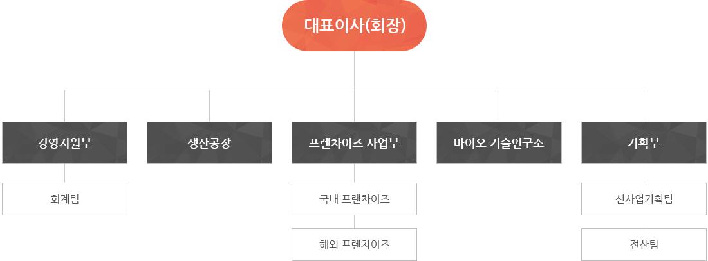

<? include "../inc/header.html"; ?>
<!-- 내용 -->

<div class="contents">
  <div class="sub_top"> </div>
  <ul class="intabs tabs5 center_box">
    <li><a href="sub01.html">회사개요</a></li>
    <li><a href="sub02.html">회사연혁</a></li>
    <li><a class="tabOn" href="sub03.html">조직구성</a></li>
    <li><a href="sub04.html">회사제안</a></li>
    <li><a href="sub05.html">오시는 길</a></li>
  </ul>
  <div class="sub_contents center_box">
    <h3>조직구성</h3>
    <div class="boxtext"> 안녕하세요.<br/>
      ㈜내츄럴본푸드는 <b class="org_txt">한국에 본사 및 기술연구소</b>를 두고 해외 지점 및 우수한 파트너들을 통해 <b class="org_txt">육질이 부드럽고 건강한 봉황닭을 <br/>
      친환경 바이오기술</b>에 의해 사육하여 세계로 수출하고 보급하고 있습니다. <br/>
    </div>
    <div class="org_wrap">  </div>
  </div>
</div>
<!-- 내용 끝 -->
<? include "../inc/footer.html"; ?>
